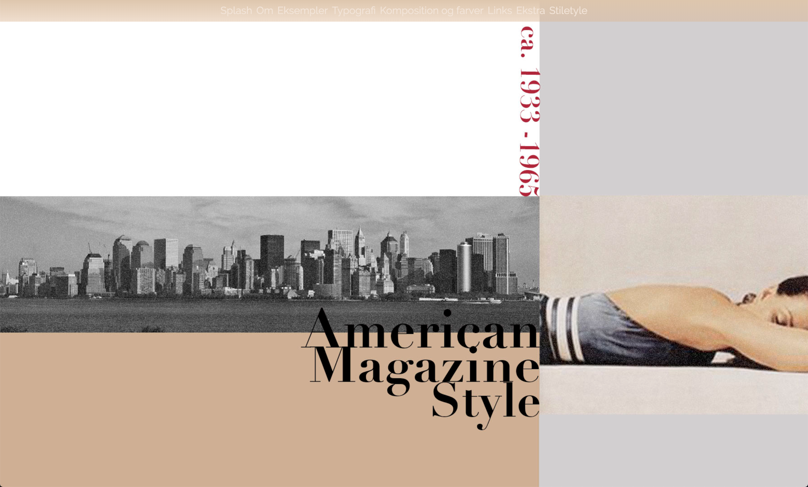
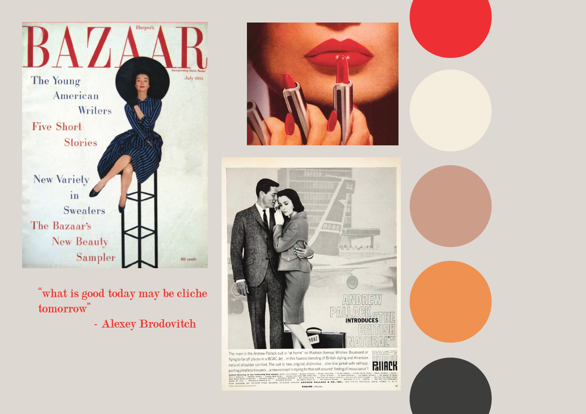
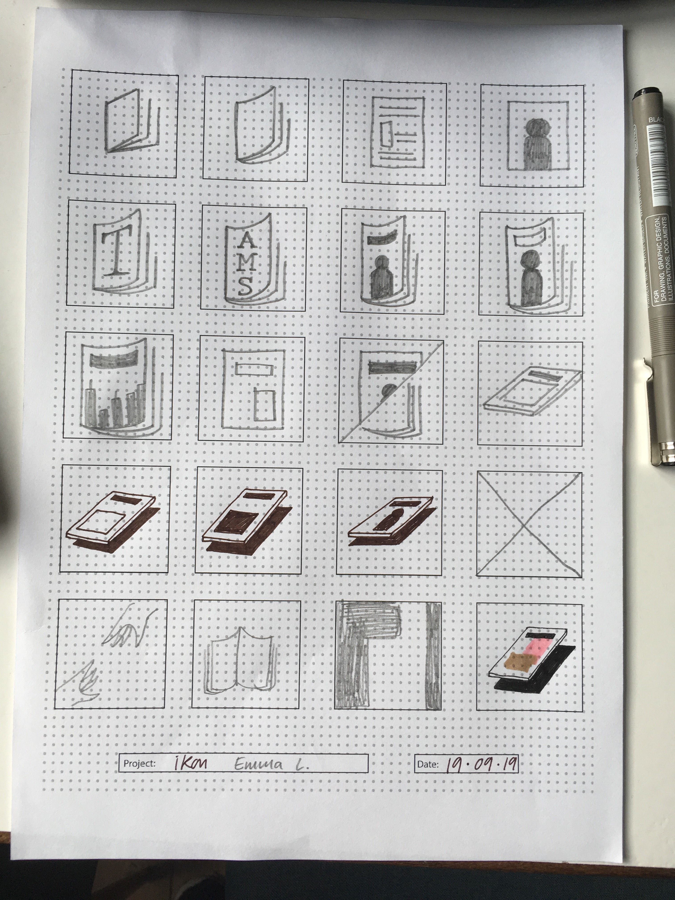
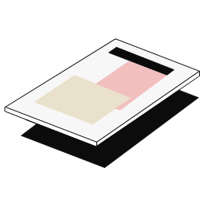

I dette tema har vi fået viden i de grundlæggende opbygningsmetoder og designprincipper der skaber en hjemmeside. Det er også i dette forløb at vi er blevet introduceret til html og css, og responsive sites. Det vil sige at en hjemmeside er læsevenlig på devices af forskellige størrelser - hovedsageligt smartphnoes, tablets og desktop computere.
Med heatmaps og ekspertest fik vi introduktion til de forskellige måder at teste en hjemmeside og dens brugerflade på, og dette er vigtigt i forhold til at finde ud af hvor ens bruger kigger henne og hvad der drager dem.
Med introduktionen til layout, komposition, gestaltlove og farver lærte vi de fundamentale redskaber til at skabe brugervenlig design.
Vi blev alle gruppevis tildelt en stilart som vi skulle lave en responsive hjemmeside om. Dette indebar at vi havde lavet research angående den stilart og taget stilling til indholdproduktionen. Vi skulle gå ud fra en wireframe i vores opbygning af hjemmesiden, lave en prototype i XD og derefter gå i gang med at lave det i html og css.
Jeg fik stilarten American Magazine 1920-1965 og til at begynde med handlede det om at researche stilarten og finde inspiration. Denne type magasin stilart er heldigvis meget hyldet indenfor design og tryk, så der var meget at finde. Men hovedsageligt handlede det om at bryde grænser og lege med billeder, layout og typografi.
I designprocesen skulle lave et splash billede, skabe et moodboard og designe et favicon til hjemmesiden. Jeg valgte at arbejde ud fra de inspirationsbilleder jeg fandt og de farver der ofte blev brugt i denne periode
Splash:
Moodboard:
Favicon:
 